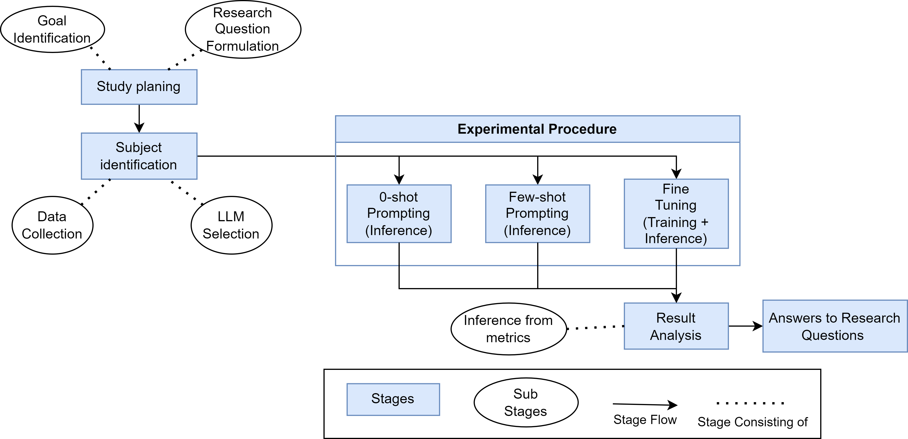
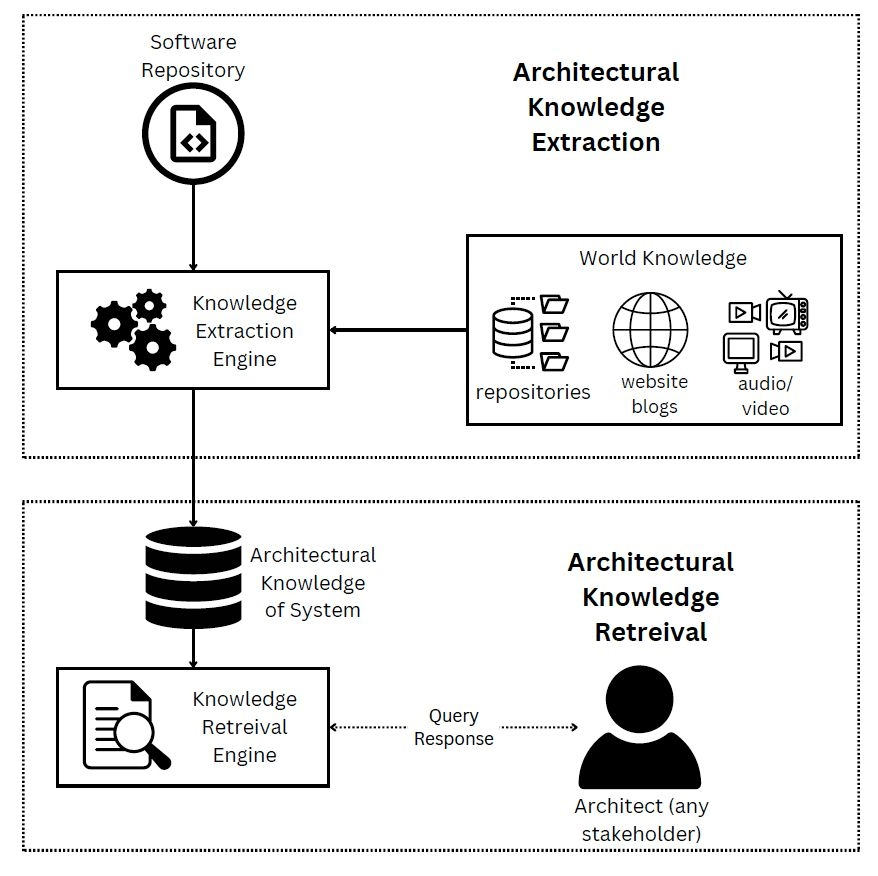
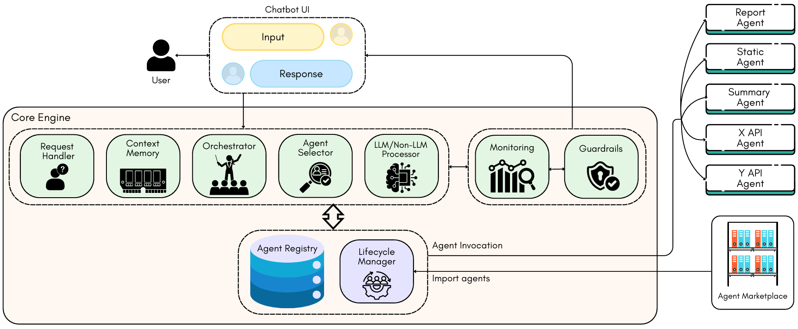
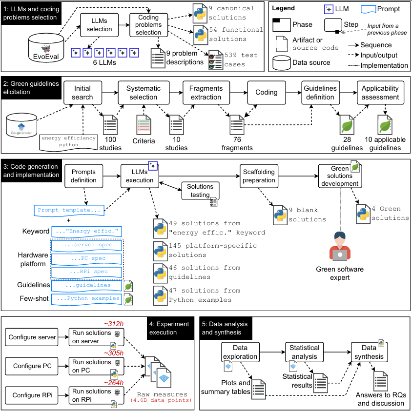

Rudra
Dhar
PhD researcher at IIIT Hyderabad developing Generative AI and Agentic AI techniques for Software Architecture Knowledge Management.
Who I am
I am a PhD researcher at the International Institute of Information Technology, Hyderabad (IIIT-H), working on Generative AI for Architecture Knowledge Management. I develop and apply Generative AI, LLM, and Information Retrieval, and Agenti AI techniques to automate Software Architecture Knowledge Management — spanning automated generation of Architectural Design Decisions, architecture views, and agentic knowledge management systems.
My advisors are Dr. Karthik Vaidhyanathan and Dr. Vasudeva Varma.
Before my PhD, I worked as an Analyst at HSBC and as a Software Engineer at NRI Fintech. I hold a Masters in Computer Science from Jadavpur University, where my thesis focused on NLP-based fact-checking. My work has accumulated over 160 citations across IEEE conferences, workshops, and preprints.
Computer Science & Engineering
Dr. Vasudeva Varma
Publications
AgenticAKM: Enroute to Agentic Architecture Knowledge Management
LLM-based Automated Architecture View Generation: Where Are We Now?
Context Matters: Evaluating Context Strategies for Automated ADR Generation Using LLMs
Engineering LLM Powered Multi-Agent Framework for Autonomous CloudOps
DRAFT-ing Architectural Design Decisions using LLMs
Generating Energy-Efficient Code via Large-Language Models – Where are we now?
Can LLMs Generate Architectural Design Decisions? — An Exploratory Empirical Study
Leveraging Generative AI for Architecture Knowledge Management
Multilingual Bias Detection and Mitigation for Indian Languages
A Multilingual Dataset for Identification of Factual Claims in Indian Twitter
JU_NLP at HinglishEval: Quality Evaluation of Low-Resource Code-Mixed Hinglish Text
A Hybrid Model to Rank Sentences for Check-worthiness
Selected Projects

Can LLMs Generate Architectural Design Decisions? — An Exploratory Empirical Study
Investigates whether Large Language Models can effectively generate Architecture Decision Records (ADRs) — documents that capture critical design choices and their rationale in software projects. Testing GPT-4, GPT-3.5, and Flan-T5 with zero-shot, few-shot, and fine-tuning approaches, the study finds that GPT-4 produces relevant and accurate design decisions in zero-shot settings, while more economical models match performance with few-shot prompting. The work demonstrates promising but pre-human-level LLM capability for automated ADR generation, calling for further research toward standardized adoption.

Leveraging Generative AI for Architecture Knowledge Management
Presents a framework for applying Generative AI to automate Software Architecture Knowledge Management (AKM). The paper identifies key challenges in capturing, storing, and retrieving architectural knowledge at scale, and proposes using LLMs to reduce the substantial manual effort traditionally required in AKM workflows. The work outlines a research roadmap for building intelligent architecture documentation tools that can assist software teams in managing evolving design knowledge.

Engineering LLM Powered Multi-Agent Framework for Autonomous CloudOps
Introduces MOYA, an LLM-powered multi-agent framework for Autonomous CloudOps. Combining Generative AI with human oversight, MOYA orchestrates diverse agents using Retrieval-Augmented Generation to handle complex cloud infrastructure workflows spanning heterogeneous data sources and processes. Evaluations across complex operational tasks demonstrate improved accuracy and task completion compared to non-agentic baselines, validating the multi-agent approach for real-world cloud operations.

A Hybrid Model to Rank Sentences for Check-worthiness
Proposes a hybrid model combining traditional NLP feature engineering with neural approaches to automatically identify and rank check-worthy claims in political debates. Evaluated on the CLEF 2019 CheckThat! shared task, the approach integrates linguistic, structural, and contextual features to prioritize sentences most in need of fact-checking by journalists and automated verification systems. This early work laid the foundation for the author's subsequent research in claim identification for low-resource Indian languages.

Generating Energy-Efficient Code via Large-Language Models – Where are we now?
Evaluates the energy efficiency of Python code generated by six major LLMs across 363 solutions to 9 coding problems, tested on three hardware platforms (server, PC, Raspberry Pi) totalling approximately 881 hours of measurements. Human solutions are 16% more energy-efficient on servers and 3% on Raspberry Pi, while LLMs outperform humans by 25% on standard PCs. Code from a green software expert consistently achieves 17–30% better efficiency than all LLM outputs, highlighting that despite impressive code generation capabilities, there remains a critical need for energy-awareness in AI-generated code.
Education & Experience
PhD in Computer Science & Engineering
Developing and applying Generative AI and Information Retrieval techniques for Software Architecture Knowledge Management. Advisors: Dr. Karthik Vaidhyanathan and Dr. Vasudeva Varma.
Masters in Computer Science & Engineering
Thesis: Fact Checkable Claim Identification and Verification.
B.Tech in Computer Science & Engineering
Research Assistant (Part Time)
Working on introducing AI features to Autonomous CloudOps, including an LLM-powered multi-agent framework published at IEEE/ACM CAIN 2025.
Analyst
Worked in the data team responsible for preparing and maintaining data pipelines for statistical and ML modeling.
Associate Software Engineer
Built full-stack web applications for share-market brokers using Java, Spring MVC, JSP, JavaScript, CSS, and relational databases.
Teaching, Visits & Talks
"Science is a collaborative effort — Teaching, outreach, and community engagement alongside research."
-
Teaching AssistantAgentic AI Certificate Course , IIIT Hyderabad
-
Guest LecturerSoftware Engineering Course (CS6401) , IIIT Hyderabad
-
Visiting ResearcherInternational Software Architecture PhD School (ISAPS) , Lorentz Center
-
Teaching Assistant & Guest LecturerSoftware Engineering Course (CS6401) , IIIT Hyderabad
-
Paper PresenterIEEE 21st International Conference on Software Architecture (ICSA 2024) , Hyderabad, India — presented "Can LLMs Generate Architectural Design Decisions?"